sham.et
Training Manual
A complete training programme: learning paths for every role, a five-day course plan, 24 modules with objectives, demonstrations, hands-on exercises, quizzes and answers, trainer notes and certification checklists.
About this volume
How to read this book
Note
Background that helps you understand what the system is doing.
Tip
A faster or better way to do something.
Important
Something that can cost you work, money or trust if you skip it.
Danger
A step that cannot be undone, or that can expose data.
Who can do this
The roles or permissions a task needs.
Steps
- Numbered steps are done in order.
Text in monospace is something you type or see exactly. Bold names a button, field or menu. Blue links jump to another place in this book; in the PDF they are clickable, and so is every line of the contents and the index. Screenshots show the example outlet Horn Daily in green; your system shows your own name, logo, colour and languages.
The library
| Vol. | Title | For |
|---|---|---|
| 01 | Product Bible | buyers, owners, managers and everyone new to the product |
| 02 | Reader Guide | readers, help-desk staff and audience teams |
| 03 | Newsroom User Manual | reporters, editors and newsroom staff |
| 04 | Advanced User Manual | senior editors, producers, audience and commercial leads |
| 05 | Administrator Manual | system administrators and technical owners |
| 06 | Installation and Operations Manual | IT, hosting and operations staff |
| 07 | Advanced Technical Manual | developers, integrators, architects and security reviewers |
| 08 | Training Manual | trainers, new staff and team leads |
| 09 | FAQ and Troubleshooting | everyone, and the help desk |
| 10 | sham.et Store and Licensing Manual | customers buying licences and Sham operators |
| 11 | Commercial and Legal Pack | buyers, procurement, legal and sales teams |
© 2026 Sham Software Systems Development General Trading PLC. All rights reserved. This documentation is supplied to licensed customers of Sham MediaOS and may be copied for their internal training and use. Product names of third parties (for example Stripe, Google Play, the App Store, Microsoft Store, LiveKit, Jitsi, Cloudflare) belong to their owners and are used only to describe how Sham MediaOS works with them. Features marked as optional need a separate account with that provider; Sham MediaOS does not include those services.
The programme
The training programme
This manual turns the other volumes into a course. It is written for trainers (Sham trainers during a roll-out, or the outlet's own trainers later) and for people learning on their own. Each module has objectives, a demonstration, a hands-on exercise and a short quiz; answers are in the Assessment part.
1.1How the training works
- Learning paths pick the modules each role needs. Nobody needs all 24.
- Modules take 45 minutes to 3 hours. Each is one demonstration and one exercise.
- A training environment is a copy of the system with training editions and accounts, never the live site. Ask your administrator or Sham to set one up; the demo data seeded by the installer is ideal.
- Quizzes check understanding. A trainee passes a module with four correct answers out of five.
- Certification: a trainee who passes every module of their path and completes the practical task gets a certificate (form in the Assessment part).
Never train on the live system
Training exercises publish stories, send newsletters and push notifications. Use a training environment or training editions that readers cannot see.
1.2Learning paths
| Role | Modules | Total time |
|---|---|---|
| Reporter | 1, 2, 3, 4, 5, 6, 7, 20 | 8 h 30 min |
| Editor and desk chief | 1, 2, 3, 4, 5, 6, 7, 8, 9, 10, 14, 19 | 13 h 00 min |
| Translator | 1, 2, 4, 8 | 4 h 15 min |
| Audience, social and newsletter editor | 1, 2, 4, 11, 12, 13, 19 | 7 h 15 min |
| Standards and investigations | 1, 2, 7, 14, 15 | 4 h 30 min |
| Producer and presenter | 1, 2, 9, 12, 16, 17 | 7 h 15 min |
| Commercial staff | 1, 2, 18, 19 | 3 h 15 min |
| Administrator | 1, 2, 21, 22, 23 | 6 h 00 min |
| IT and hosting | 1, 2, 23, 24 | 6 h 00 min |
1.3Five-day roll-out course
For a newsroom going live, Sham runs the following week. Days 1 and 2 are for everyone in groups by role; days 3 to 5 are for specialists.
| Day | Morning | Afternoon |
|---|---|---|
| 1 | Modules 1–3: welcome, signing in, planning | Modules 4–5: Story Studio, media |
| 2 | Modules 6–7: editing, corrections | Modules 8–9: translation, breaking and live |
| 3 | Modules 10–13: front pages, newsletters, social, moderation | Modules 14–15: standards, investigations |
| 4 | Modules 16–17: elections, broadcast (producers) | Modules 18–19: revenue, analytics; module 20 Reporter app |
| 5 | Modules 21–23: administration | Module 24 (IT), certification tasks and go-live rehearsal |
1.4Preparing a session
- Training environment is up, with training editions and demo stories.
- One training account per trainee, with the right role; two-step sign-in ready.
- Projector or large screen; trainees have a computer and their phone.
- Printed quick reference cards for the path.
- Attendance sheet and quiz sheets printed.
1.5Trainer notes
- Start each module with why: the newsroom problem the feature solves.
- Demonstrate once, slowly, then let trainees do it. Walk the room.
- Use the outlet's real beats and sections in exercises; trainees learn faster with their own work.
- Collect questions you cannot answer and send them to Sham support; add answers to the FAQ.
- End with what changes on Monday: who does what, and where to get help.
1.6Quick reference card: the newsroom in ten moves
| To… | Go to… |
|---|---|
| See what is waiting for you | My work |
| Pitch a story | Planning → New pitch |
| Start writing | New story (N) |
| Add a photo | Type /photo in Story Studio |
| Check before submitting | Readiness |
| Submit | Submit for review |
| Publish or schedule | Publish / Schedule (editors) |
| Correct a published story | Add correction |
| Send a breaking alert | Breaking → New alert |
| Get help | These manuals, your desk chief, your administrator |
Course book
Quick start
2.1Who this is for
This guide is for the person who sets up Sham MediaOS for the first time at your outlet. You need a new Ubuntu 24.04 server, root access and a domain name. You do not need to know the product yet. The whole path takes about one hour.
Contents
2.2What Sham MediaOS is
Sham MediaOS is a newsroom and publishing platform. It is sold by Sham Software Systems Development General Trading PLC (https://sham.et, contact@sham.et). One installation gives your outlet:
- a newsroom where reporters write, editors review and stories are published, in several languages;
- a public website for readers, with one edition per language, that also works well on phones;
- distribution: breaking alerts, newsletters, social posts, push alerts and a digital newspaper;
- broadcast tools (in the editions that include them): rundowns, studios, programme guide, graphics and live streaming;
- mobile apps under your own name (in the editions that include them).
Sham MediaOS shows your outlet's name everywhere: on the website, in the apps, in e-mails and in every interface language. You set the name once (see step 5).
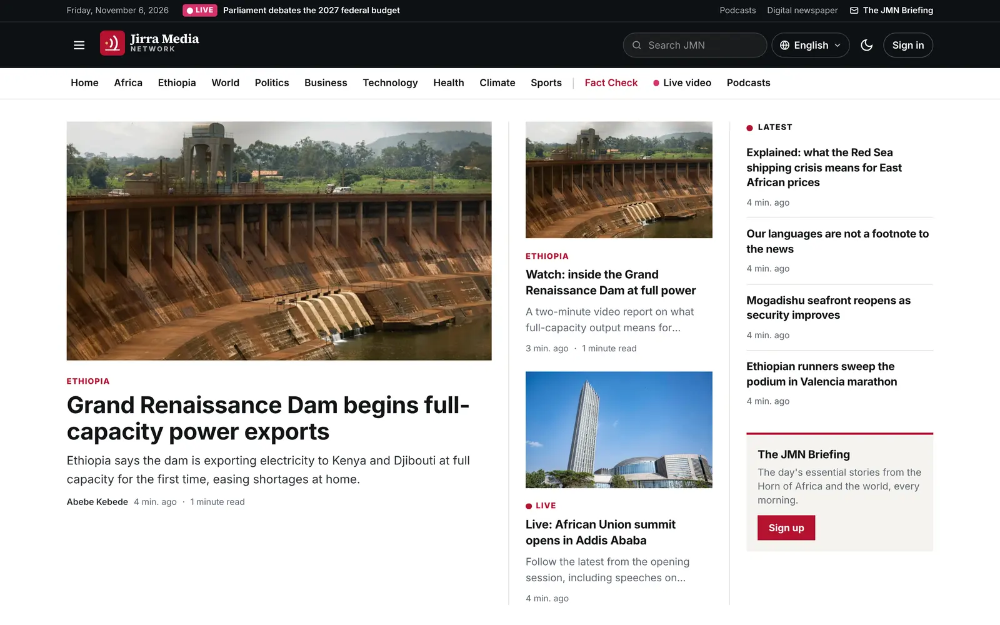
The public website, as readers see it.
2.3The editions
Sham MediaOS is sold in five editions. Each edition includes everything in the editions before it. You can upgrade at any time by installing a new licence key. You never need to reinstall.
| Edition | Editions (sites) | Languages | Staff | Studios | Adds |
|---|---|---|---|---|---|
| Starter | 1 | 3 | 5 | 0 | Newsroom and CMS, website and PWA, newsletters, local payments, advertising |
| Professional | 3 | 10 | 25 | 0 | Memberships and paywall, branded mobile apps, AI desk, analytics, podcasts, elections and polls |
| Broadcast | 5 | 15 | 75 | 3 | Broadcast (rundowns, studios, schedule, graphics), live streaming and relays, Interaction Centre, syndication and Content Credentials |
| Enterprise | Unlimited | Unlimited | 500 | 20 | Single sign-on with Google Workspace, Microsoft Entra ID or SAML 2.0 (Okta, ADFS, Keycloak and others), several brands (an edition as its own publication), archive tiers and legal holds, audit export |
| Global | Unlimited | Unlimited | Unlimited | Unlimited | Several data centres |
A new installation without a licence key runs as a 14-day trial of the Professional edition.
Prices are set by Sham. See the current prices at store.sham.et.
2.4Install in one command
Before you start:
- Get a fresh server with Ubuntu 24.04 LTS and root access. For a public launch, 8 vCPU, 16 GB RAM and 160 GB NVMe disk is recommended. See the Installation Guide see Installation and Operations Manual for sizes.
- Point the DNS of your website host (for example
example.com) and your API host (api.example.com) at the server. The installer gets the HTTPS certificates itself, so DNS must already work. -
Put the Sham MediaOS release on the server, for example in
/srv/jmn/app, and change into that folder. -
Have your licence key ready if you already bought one. It starts with
LIC1.. You can also add it later.
Then run this one command as root. Replace the example values with your own:
sudo JMN_WEB_HOST=example.com \
JMN_ADMIN_EMAIL=editor@example.com \
JMN_ORG_NAME="Example Daily" \
JMN_SHORT_NAME=ED \
JMN_ACCENT="#0a5c36" \
JMN_LICENCE_KEY=/root/licence.txt \
bash infra/install.sh
Only JMN_WEB_HOST and JMN_ADMIN_EMAIL are required. The script prepares and secures the server, installs Docker,
creates every secret, builds and starts the platform, and runs a health check. When it ends, it prints:
- the website address, for example
https://example.com; - the newsroom address, for example
https://example.com/newsroom; - where the first administrator's password is: the file
/root/jmn-admin-password.
Technical names inside the product (commands, settings, folders) start with
jmnorJMN_. This is normal. Readers never see these names.
If the script stops with an error, fix the cause it prints and run the same command again. Re-running is safe.
2.5First sign-in with two-factor authentication
Administrator and editor roles must use two-factor authentication. You set it up at your first sign-in.
- On the server, read the password:
sudo cat /root/jmn-admin-password. -
Open
https://<your web host>/newsroom/login. -
Enter your Work email and Password, then select Continue.
- You are sent to Set up two-step verification. Scan the QR code with an authenticator app (for example Google Authenticator, 1Password or Authy). You can also type the key by hand.
-
Enter the 6-digit code from the app.
-
Save your recovery codes. Use Copy codes or Download. They are shown only once.
- Choose your own password: open My profile (People group), find Change your password, enter the generated password and your new one, and select Change password. Keep it in a password manager.
- On the server, delete the password file:
sudo rm /root/jmn-admin-password.
From now on, you sign in with your password and a 6-digit code. If you lose your phone, use a recovery code.
2.6Set your brand
If you gave your names to the installer, this is already done. To check or change it:
- In the newsroom, open Administration → Brand.
- Fill in Brand name, Short name (up to 12 characters, used for the logo mark, app icons and SMS), Tagline, Legal name, Public contact e-mail and Brand colour.
- Select Save brand.
The website, apps, e-mails and all interface languages show the new name within a minute.
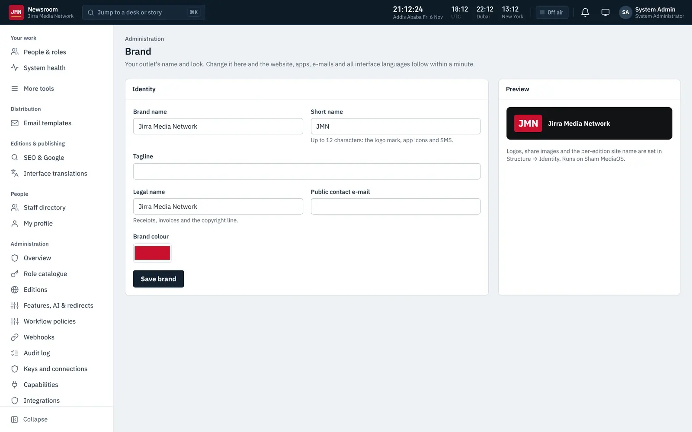
Administration → Brand: your outlet's name, short name, tagline and colour.
2.7Install your licence
To buy a licence:
- Go to store.sham.et.
-
Choose an edition and a term, and enter your domains.
-
Pay on the payment provider's page, or ask for bank transfer details.
- When the payment is confirmed, the store shows your key on the order page and e-mails it to you.
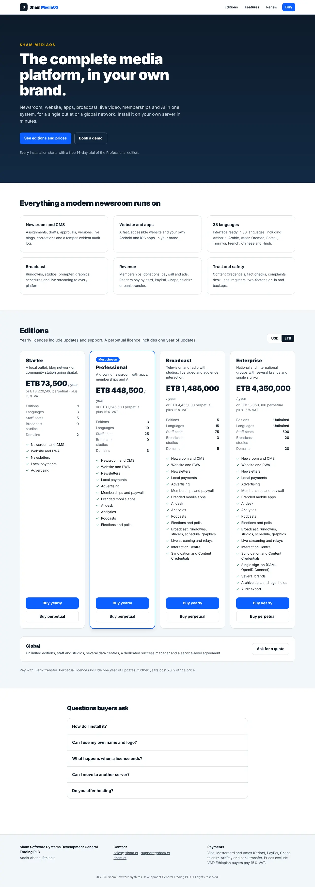
store.sham.et: choose an edition and a term.
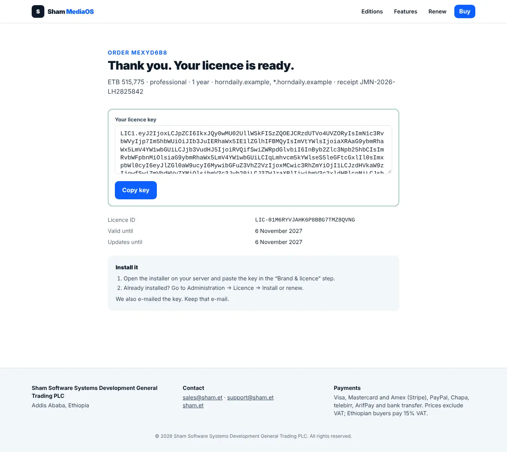
The order page shows your licence key once the payment is confirmed.
To install the key:
- Open Administration → Licence.
-
Paste the key into Licence key. It starts with
LIC1.. -
Select Install licence.
The page shows your edition, the end date, your seats and limits, and the features you have.
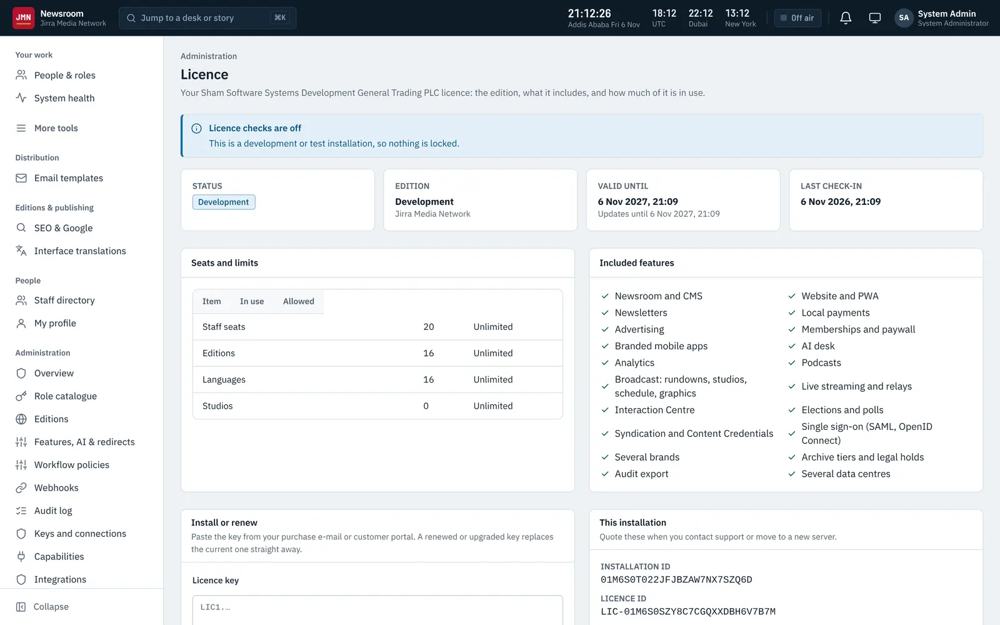
Administration → Licence: status, edition, seats and the box to install a key.
2.8Publish a first story
-
In the newsroom, select New story (or press
N). -
Write a Headline, a short Summary and the Body. A blank line starts a new paragraph.
-
Choose the Edition (the language of the story) and the Story type, for example Article.
-
Select Create draft. The full story editor opens.
-
Open the Publish tab on the right. Fix every item under Ready to publish? that blocks publication.
-
Under Workflow, move the story through the steps: Submit for review, then Start review, then Approve, then Publish now. The first administrator is an Executive Administrator and may do every step. In daily work, reporters submit and editors do the rest.
- Select View live to see the story on the website.
You have a working Sham MediaOS installation.
2.9Where to go next
| You want to | Read |
|---|---|
| Train reporters, editors and producers | Newsroom Guide see Newsroom User Manual |
| Add staff, editions, payments, backups and the go-live checklist | Administrator Guide see Administrator Manual |
| Install on Kubernetes, update, restore or move servers | Installation Guide see Installation and Operations Manual |
Before you open the site to the public, work through Administration → Overview → Go-live checklist until no required item is open.
Task guides for every desk
This chapter collects the tasks journalists do every day, desk by desk, as numbered steps. Each task names who may do it. If a button described here is missing on your screen, your role does not include that permission: ask your desk chief or administrator.
3.1Your account and your day
Sign in for the first time
Who can do this
Everyone with a staff account. Your administrator sends you an invitation e-mail.
Steps
- Open the invitation e-mail and select Set up your account. The link works once and expires after a few days.
- Choose a password of at least 12 characters. A sentence you can remember is better than a short word with symbols.
- If your role needs two-step sign-in, install an authenticator app on your phone (for example Google Authenticator, Microsoft Authenticator, 2FAS or Aegis), scan the code on the screen and type the six-digit code it shows.
- Save the recovery codes in a safe place. Each code can be used once if you lose your phone.
- You arrive at the Command centre.
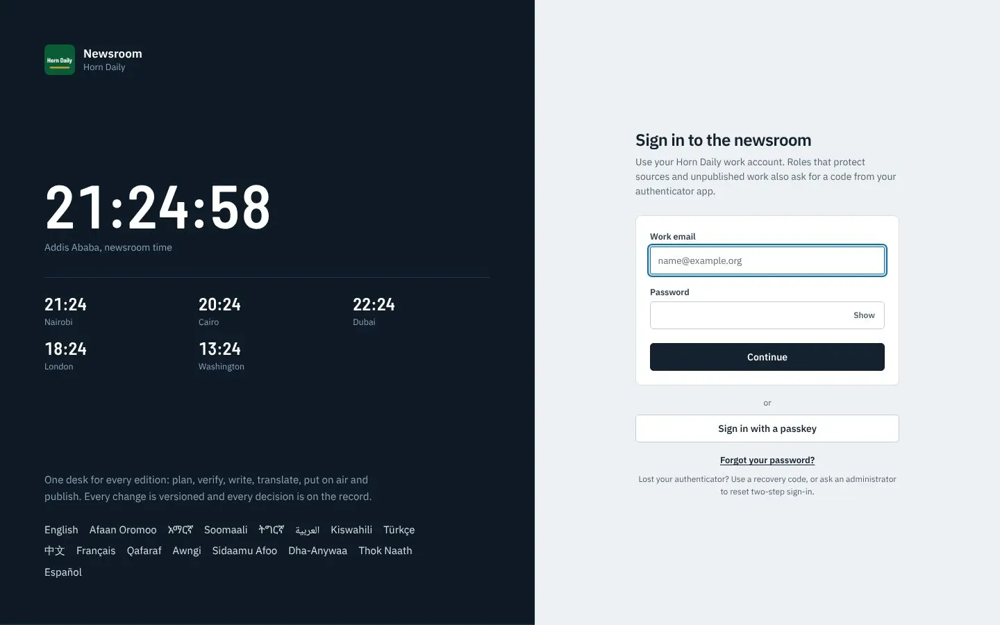
Add a passkey so you can sign in without a password
Steps
- Open My profile and security (your name at the bottom of the menu).
- In Passkeys, select Add a passkey. If you signed in more than 15 minutes ago, you are asked to sign in again first.
- Follow your device's prompt: fingerprint, face or the device PIN.
- Next time, choose Sign in with a passkey on the sign-in page.
Plan your day with My work
Steps
- Open My work.
- Deal with Queries first: editors are waiting for your answer.
- Then Reviews if you are an editor, oldest first.
- Then your Stories in order of deadline.
- Mark tasks done as you finish them; the person who set them is told.
Keyboard
G then M opens My work, G then P opens Planning and N starts a new story. Ctrl+K (or Cmd+K on a Mac) opens the command palette to search and jump anywhere.
3.2Planning desk
Pitch a story
Who can do this
Reporters and editors.
Steps
- Open Planning and select New pitch.
- Write a working title and two or three sentences on the angle: what is new, why now, who is affected.
- Choose the desk and the edition (or several editions).
- Add sources you plan to use and the media you expect (photos, video, data).
- Select Save pitch. Your desk chief sees it on the board.
Assign a story
Who can do this
Desk chiefs and editors with the planning permission.
Steps
- Open the pitch on the Planning board.
- Choose the owner and, if needed, a photographer or video journalist.
- Set the deadline and the target publication time.
- Select Assign. The reporter is notified and the story appears in their My work.
Put an event in the calendar
Steps
- Open Calendar and select the day.
- Select New event, give a title, time, place and the desk that covers it.
- Link a pitch if one exists, so the coverage plan and the event stay together.
3.3Writing desk
Write a story
Who can do this
Reporters and editors.
Steps
- Select New story, or Start story on an assigned pitch.
- Choose the edition and the type of story.
- Write the headline (the readiness check warns when it is too long for search results) and the summary (one or two sentences shown under the headline and in sharing cards).
- Write the body. Press Enter for a new paragraph; type
/to insert a block: heading, photo, gallery, video, audio, quote, fact box, timeline, embed or related link. - Open Settings and choose the section, tags, byline and location.
- Add a main image with a caption, a credit and alternative text that describes the picture for people who cannot see it.
- The story saves itself every few seconds. Saved at the top confirms it.
Add a photo from the media library
Steps
- In Story Studio, put the cursor where the photo should go and type
/photo. - Search the library, or select Upload to add a new file.
- Pick the photo. Check the caption and credit; change the caption for this story if needed (the library caption stays unchanged).
- Drag the focal point to the subject's face so crops in lists and on phones keep it.
Embed a social media post or a map
Steps
- Copy the address of the post or map.
- Type
/embedin Story Studio and paste the address. - Check the preview. Some platforms load their content only when the reader agrees to it; the page explains this to readers.
Submit your story for review
Steps
- Open Readiness in the side panel. Fix every red item; yellow items are advice.
- Select Submit for review. Add a note for the editor if there is anything they must know (an embargo, a legal concern, a source to protect).
- The story is locked for you while an editor works on it. You are notified of queries and of publication.
Answer an editor's query
Steps
- Open the story from My work → Queries. The query is highlighted next to the paragraph it concerns.
- Change the text, or answer in the query thread.
- Select Resolve when the question is settled.
3.4Editing desk
Edit and publish a story
Who can do this
Editors with the publish permission for that desk and edition.
Steps
- Open My work → Reviews, or the Stories list filtered by Submitted.
- Select Start editing. The reporter can no longer change the text until you return it or publish.
- Edit the text. Use Track changes to show the reporter what you changed, or Compare to see versions side by side.
- Raise a query on any paragraph you cannot fix yourself.
- Check the readiness list, the headline and the main image.
- If an approval chain applies (for example legal review), select Send for approval; otherwise choose Publish now or Schedule with a date and time.
Approval chains
When your outlet has set an approval chain for this kind of story, the Publish button stays disabled until every required approver has approved. You cannot approve your own story.
Return a story to the reporter
Steps
- Select Return to reporter.
- Write what needs to change.
- The story goes back to the reporter's My work with your note.
Schedule a story
Steps
- Select Schedule.
- Choose the date and time. The time is in the edition's time zone, shown next to the field.
- Confirm. The story appears in Scheduled and is published automatically, even if nobody is signed in.
Publish an update
Steps
- Open the published story and select Edit published story.
- Change the text.
- Choose Update and write a short update note for readers (for example Updated with the minister's statement).
- Select Publish update. The time of the last update is shown to readers.
Publish a correction
Steps
- Open the published story and select Add correction.
- Fix the error in the text.
- Write the correction note: what was wrong and what is right. Do not repeat a defamatory claim.
- Select Publish correction. The note appears on the story and in the public corrections log, and webhooks and partners are told.
Take a story down
Use with care
Taking a story down removes it from the website, apps and feeds. It stays in the newsroom with its history. Your outlet's policy may require the editor-in-chief or legal to approve.
Steps
- Open the story and select Unpublish.
- Choose the reason (legal, error, embargo, other) and write a note.
- Choose whether readers who open the old address see a short notice or a page not found.
- Confirm with your two-step code if asked.
3.5Translation desk
Send a story to another edition
Steps
- In Story Studio open Translations.
- Select the editions that should carry the story and choose Request translation.
- The request appears on the Translation desk of each edition.
Translate a story
Who can do this
Translators and edition editors.
Steps
- Open Translations and select a story in To translate.
- The original is on the left, your version on the right, block by block.
- Use the termbase suggestions for names and places. Use the machine draft only if your outlet allows it; it is marked as a draft until you change and approve it.
- Adapt the headline for your readers: a literal translation is often not the best headline.
- Select Send for review. An edition editor approves and publishes.
Add a term to the termbase
Steps
- Open Termbase and select New term.
- Enter the term in the source language and its approved form in each language, with a note on usage.
- Save. Writers and translators see it as a suggestion from now on.
3.6Media desk
Upload a large video from the field
Steps
- Open Media → Upload, or use the Reporter app.
- Choose the file. Large files are sent in pieces; if the connection drops, the upload continues where it stopped when you are back online.
- When processing is finished, the file shows a thumbnail and the web versions.
- Add captions, credit and the rights.
Record rights and expiry for agency material
Steps
- Open the media item.
- In Rights, choose the licence type and the owner, and set the expiry date.
- Save. Before expiry, editors are warned, and the item is flagged in every story that uses it.
Prepare a vertical clip for social platforms
Steps
- Open Video and select the source video.
- Choose New clip, set the in and out points.
- Choose the vertical format; move the frame to keep the subject in view.
- Add captions (generated or typed) and the outlet's branding.
- Choose the platforms and publish or schedule.
3.7Breaking and live desk
Send a breaking alert
Who can do this
Editors with the breaking-news permission. Your outlet may require a second editor to confirm.
Steps
- Open Breaking and select New alert.
- Write one clear line: what happened, where. It appears in banners and notifications as written.
- Link the story, or create a short holding story now and update it later.
- Choose the editions, and the channels: website banner, app and web push, SMS where available.
- Select Send. If a second confirmation is required, the alert waits for it.
- When the news is no longer breaking, select End alert.
Run a live blog
Steps
- Open Live and select New live page. Give a headline, a summary and the editions.
- Publish the live page; it appears on the front page where editors place it.
- Write posts in the composer. Add photos, video, quotes or embeds.
- Mark important posts as key events; they appear in the summary at the top.
- Pin a post to keep it at the top.
- When coverage ends, select End live coverage and write a closing summary.
3.8Audience desk
Send a newsletter issue
Steps
- Open Newsletters and the list.
- Open the next automatic issue, or select New issue.
- Check the stories, the order, the subject line and the preview text.
- Select Send test to receive it yourself; check it on a phone.
- Select Schedule or Send now.
Send a push notification
Steps
- Open Notifications and select New notification.
- Write the text, link the story, choose the editions and topics.
- Send or schedule. Results (delivered and opened) appear after a few minutes.
Moderate comments
Steps
- Open Comments. Reported comments are at the top.
- For each comment choose Approve, Hide or Reject, with a reason from the community rules.
- Block a reader who repeatedly breaks the rules; the reason is recorded.
Publish a callout
Steps
- Open Callouts and select New callout.
- Write what you are looking for and why, and how answers will be used.
- Choose the questions (text, photo, document, contact) and the consent text.
- Publish. Place the callout in stories or on the front page.
- Read answers in the callout; move useful material to Uploads for checking.
3.9Standards desk
Handle a reader complaint
Steps
- Open Complaints. New complaints show the deadline your policy sets.
- Assign the complaint to the responsible editor.
- Investigate; record what you found.
- Reply to the reader from the complaint. If a correction is needed, publish it from the story and link it.
- Close the complaint with the outcome.
Publish a fact-check
Steps
- Open Fact-checks and select New fact-check.
- Enter the claim, who made it, where and when.
- Add the evidence with sources.
- Choose the rating and write the verdict.
- Publish. The verdict is marked up so search engines can show the rating.
3.10Field work: the Reporter app
File a story from your phone
Steps
- Open the Reporter app and sign in with your staff account and two-step verification.
- Open Assignments and move yours through Accept and Start, or create a new draft.
- Write the headline, summary and paragraphs. Drafts can be written offline.
- Add photos, video or audio from the phone's camera, with caption, credit and alternative text.
- Select File. Without a connection, the app keeps the draft and sends it when you are online again; large uploads continue after a dropped connection or an app restart.
When someone else changed the story
If an editor changed the story while you were offline, the app shows a conflict. Choose keep mine, take theirs or save copy.
Protect your sources in the field
Lock your phone with a PIN or fingerprint, keep sensitive notes out of ordinary chat and note apps, and file material through the Reporter app rather than sending it through personal messaging.
Modules
Modules
Twenty-four modules, each with objectives, a demonstration, an exercise and a quiz.
4.1Module 1: Welcome to Sham MediaOS
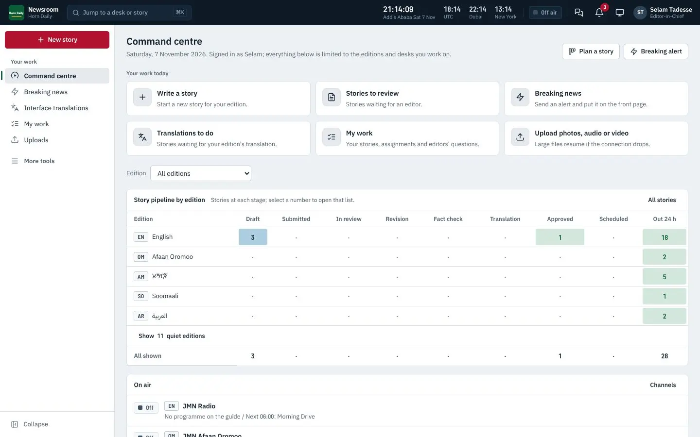
Objectives
After this module you can: * Explain what Sham MediaOS does for the newsroom, the website, the apps and broadcast * Name the editions of your outlet and their languages * Find the Command centre, My work and the main menu * Know where to find help: these manuals, your desk chief, your administrator
Demonstration
-
Show the public website in two editions, including a right-to-left or Ethiopic one.
-
Show the Command centre and explain each card.
- Open the menu and name each workspace in one sentence.
Hands-on exercise
- Open the website of your outlet in two editions and find the same section in each.
- Sign in to the newsroom training account.
- Open My work and tell the trainer what is in it.
- Use the command palette (Ctrl+K) to jump to Planning, then to Stories.
Check your understanding
- What is an edition?
- What happens to the public website if the licence lapses?
- Which page shows what is waiting for you?
- Which keys open the command palette?
- Where are the screenshots in these manuals taken from?
Answers are in the Assessment part, module 1.
4.2Module 2: Signing in safely
Objectives
After this module you can: * Sign in with a password and two-step verification * Set up an authenticator app and keep recovery codes * Add a passkey * Recognise phishing and protect your account
Demonstration
-
Walk through the first sign-in from an invitation.
-
Set up an authenticator app on a phone.
- Add a passkey and sign in with it.
Hands-on exercise
- Accept your training invitation and choose a strong passphrase.
- Set up two-step sign-in with an authenticator app.
- Store your recovery codes in a safe place (not in the same phone).
- Add a passkey from My profile and security.
- Sign out and sign in again with the passkey.
- Open your list of signed-in devices and sign out an old one.
Check your understanding
- Why are SMS codes not used for staff sign-in?
- You lost your phone. What do you use?
- Can you reuse a recovery code?
- An e-mail asks you to sign in through a link to fix your account. What do you do?
- Why are you asked to sign in again before adding a passkey?
Answers are in the Assessment part, module 2.
4.3Module 3: Planning and assignments

Objectives
After this module you can: * Create a pitch with angle, desk and edition * Assign a story with a deadline * Use the editorial calendar * Follow assignments through My work
Demonstration
-
Create a pitch and assign it.
-
Show the calendar and link an event to a pitch.
Hands-on exercise
- Create a pitch for a story in your beat.
- Ask the trainer (as editor) to assign it to you with a deadline.
- Find the assignment in My work.
- Add a calendar event for a press conference tomorrow and link it to your pitch.
- Start the story from the pitch.
Check your understanding
- Where does an assigned story appear for the reporter?
- What should a pitch contain?
- Who can assign stories?
- Why link events to pitches?
- Can one pitch target several editions?
Answers are in the Assessment part, module 3.
4.4Module 4: Writing in Story Studio
Objectives
After this module you can: * Write a headline and summary that work in search and sharing * Build a story from blocks * Fill the story settings * Use the readiness check
Demonstration
-
Write a short story with text, a heading, a quote and a photo.
-
Show versions and how to restore one.
Hands-on exercise
- Create a new news story in your edition.
- Write a headline under 70 characters and a one-sentence summary.
- Write four paragraphs, a subheading and a quote block.
- Insert a photo from the library with caption, credit and alternative text.
- Choose the section and two tags.
- Open Readiness and fix every red item.
- Open Versions and compare your first and latest version.
Check your understanding
- What is alternative text for?
- How do you insert a block?
- Do you need to press Save?
- What does the readiness check do?
- Can you get back an earlier version?
Answers are in the Assessment part, module 4.
4.5Module 5: Media: photos, audio, video and documents
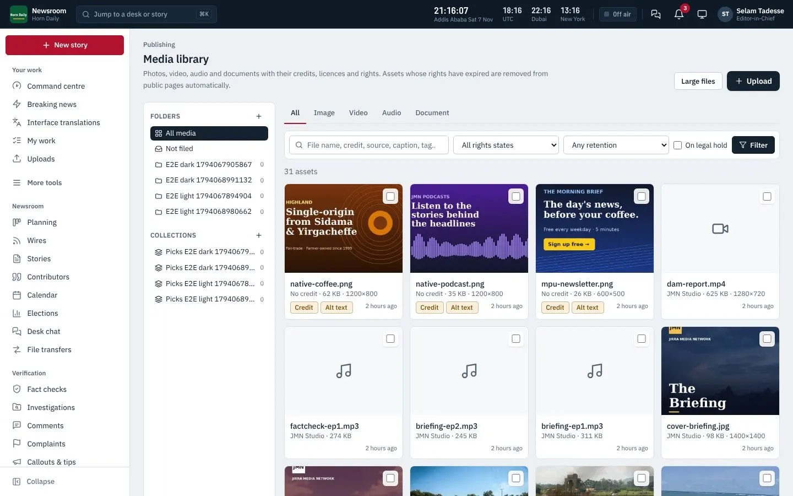
Objectives
After this module you can: * Upload media, including large files * Describe media with captions, credits, alternative text and rights * Set the focal point * Respect rights and expiry
Demonstration
-
Upload a large video and show resumable upload.
-
Show rights and expiry on an agency photo.
Hands-on exercise
- Upload three photos and one short video.
- Write captions in your edition language and alternative text for each.
- Record one photo as agency material with an expiry date next month.
- Set the focal point on a portrait.
- Use one photo in your story from module 4.
Check your understanding
- What happens if the connection drops during a large upload?
- Why record rights and expiry?
- Does changing a caption in a story change it in the library?
- What is the focal point for?
- Where does material sent by contributors arrive?
Answers are in the Assessment part, module 5.
4.6Module 6: Editing, approval and publishing
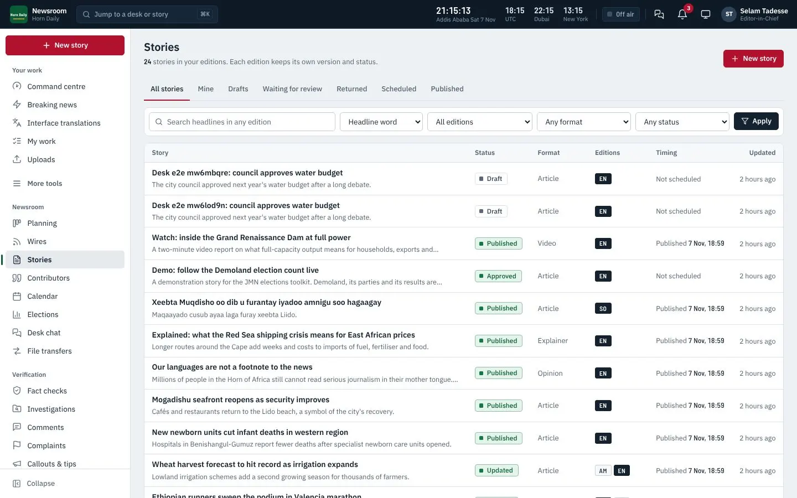
Objectives
After this module you can: * Take a submitted story into edit * Raise and resolve queries * Publish, schedule and return stories * Work with approval chains
Demonstration
-
Edit a submitted story with track changes and a query.
-
Show a story blocked by an approval chain.
Hands-on exercise
- Pair up: one trainee submits a story, the other edits it.
- As editor, raise a query on one paragraph.
- As reporter, answer and resolve the query.
- As editor, schedule the story for ten minutes later.
- Watch it publish on the website.
- Return another story to the reporter with a note.
Check your understanding
- Can a reporter change a story while an editor has it?
- When is the Publish button disabled?
- Can you approve your own story under a chain?
- In which time zone is a scheduled time?
- Where are approvals recorded?
Answers are in the Assessment part, module 6.
4.7Module 7: Updates, corrections and takedowns
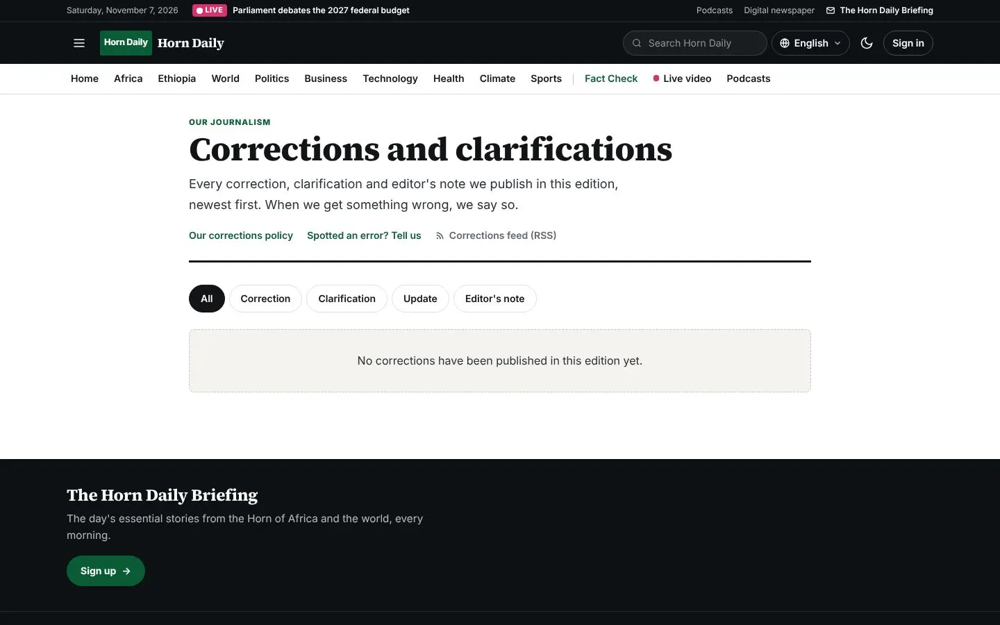
Objectives
After this module you can: * Publish an update with a note to readers * Publish a correction the right way * Take a story down with a reason * Explain why silent edits damage trust
Demonstration
- Show a correction on a story and on the public corrections page.
Hands-on exercise
- Publish an update to your training story with an update note.
- Introduce a factual error, then correct it with a correction note.
- Find your correction on the public corrections page.
- Unpublish a training story with the reason test.
Check your understanding
- Where do corrections appear?
- Should a correction repeat a defamatory claim?
- Does unpublishing delete the story?
- Who is told about a correction?
- What is the difference between an update and a correction?
Answers are in the Assessment part, module 7.
4.8Module 8: Languages, translation and the termbase
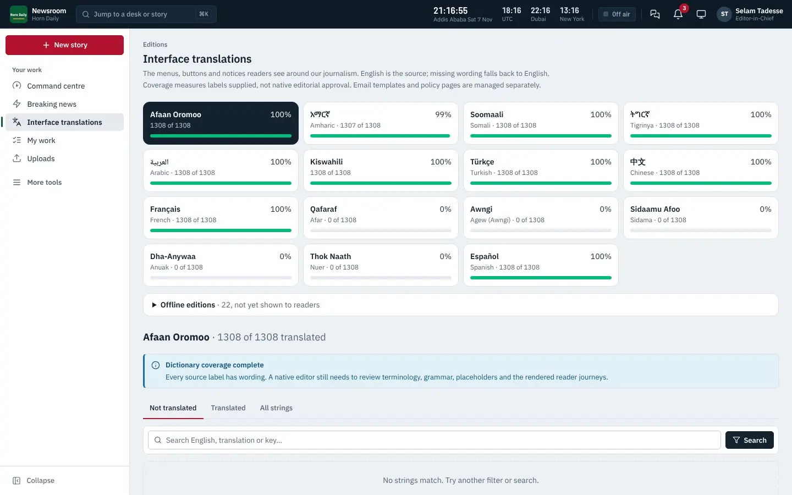
Objectives
After this module you can: * Request a translation * Translate side by side * Use and add termbase entries * Approve a translation
Demonstration
-
Request a translation and translate it.
-
Show termbase suggestions.
Hands-on exercise
- Request translation of your story into a second edition.
- Open it on the Translation desk and translate the headline and two paragraphs.
- Add a place name to the termbase with spellings in two languages.
- Send for review; the trainer approves.
Check your understanding
- Is a machine draft publishable as it is?
- What is the termbase?
- Should a headline be translated literally?
- Who approves translations?
- What happens when a reader opens a page missing in their edition?
Answers are in the Assessment part, module 8.
4.9Module 9: Breaking news and live coverage
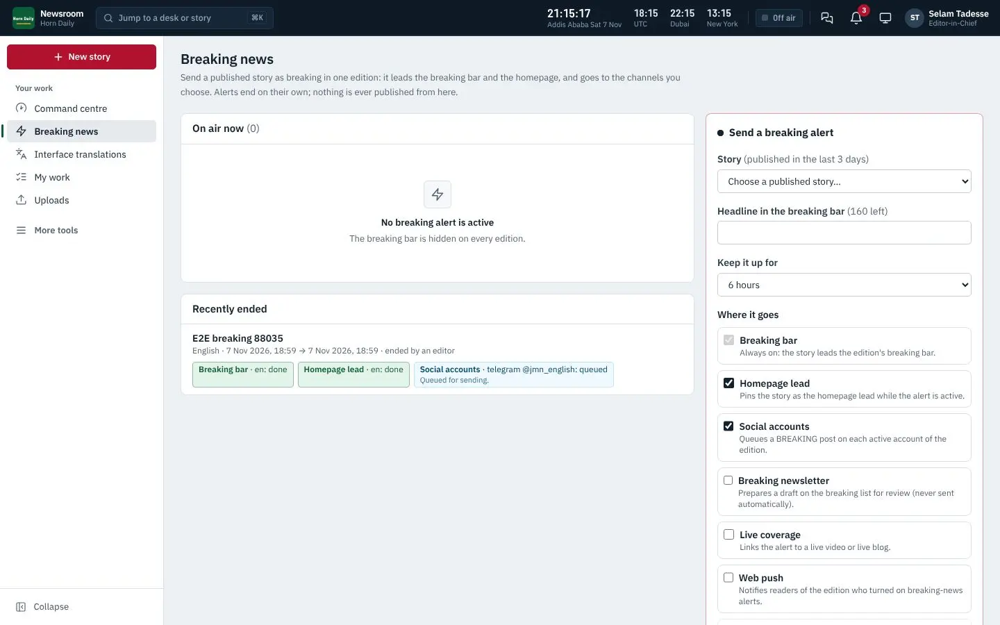
Objectives
After this module you can: * Send and end a breaking alert * Run a live blog with key events * Follow your outlet's breaking news policy
Demonstration
-
Send a breaking alert to one training edition.
-
Run a live blog for ten minutes.
Hands-on exercise
- Write a one-line alert and send it to the training edition.
- Check the banner on the website and the push on a phone.
- Open a live page and post five updates, one with a photo.
- Mark two posts as key events and pin one.
- End the alert and close the live page with a summary.
Check your understanding
- Which channels can a breaking alert use?
- Why might an alert wait before sending?
- Do readers need to reload a live page?
- What are key events?
- When should an alert end?
Answers are in the Assessment part, module 9.
4.10Module 10: Front pages, structure and SEO
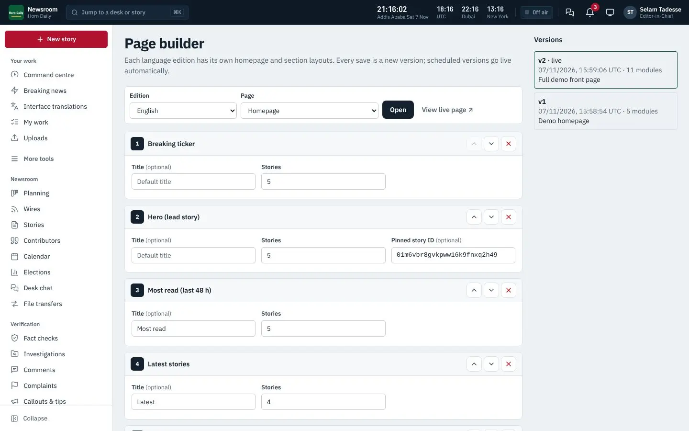
Objectives
After this module you can: * Arrange the front page * Manage sections and topics * Set search and sharing details
Demonstration
-
Rearrange a front page block.
-
Show the search title and social card of a story.
Hands-on exercise
- Move your training story into the lead position of the training edition.
- Create a topic and add two stories to it.
- Set a search title and description on your story.
- Check the social card preview.
Check your understanding
- Where are front pages arranged?
- What is a topic?
- Why set a separate search title?
- What links editions for search engines?
- Where are sections created?
Answers are in the Assessment part, module 10.
4.11Module 11: Newsletters and notifications
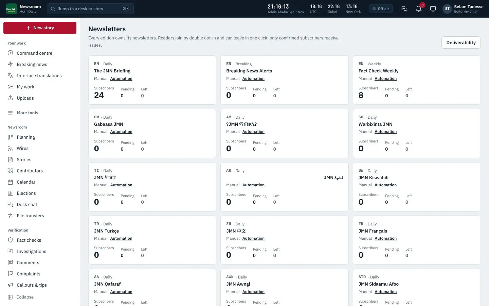
Objectives
After this module you can: * Create a list and an issue * Test and schedule sending * Send a push notification * Read deliverability
Demonstration
-
Build and test an issue.
-
Explain bounce and complaint rates.
Hands-on exercise
- Create a training list with a description in your language.
- Create an issue with three stories and a subject line.
- Send a test to yourself and read it on your phone.
- Schedule the issue.
- Send a push notification to the training topic.
- Open Deliverability and read the rates.
Check your understanding
- Why double opt-in?
- What happens to hard bounces?
- A good complaint rate is below…?
- Who should receive a push?
- Where are e-mail texts edited?
Answers are in the Assessment part, module 11.
4.12Module 12: Social, video and podcasts
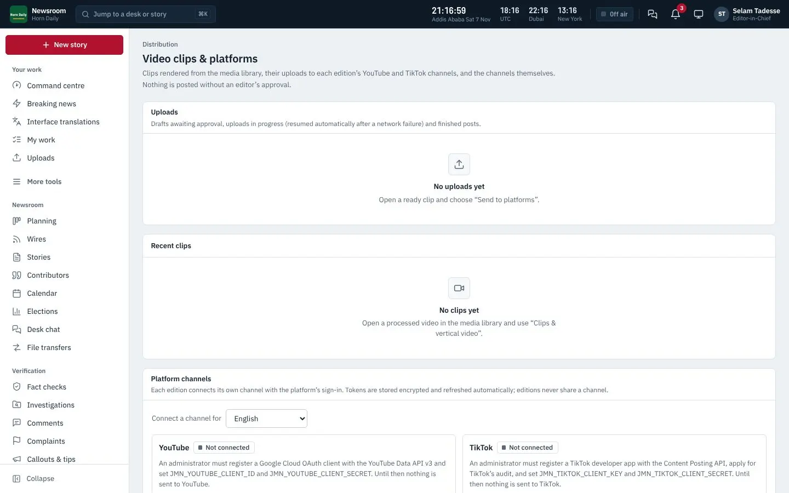
Objectives
After this module you can: * Schedule social posts * Make a vertical clip with captions * Publish a podcast episode
Demonstration
-
Make a vertical clip.
-
Publish an episode with a transcript.
Hands-on exercise
- Schedule a social post for your story.
- Cut a 30-second vertical clip with captions.
- Create a podcast episode with title, description and chapters.
- Schedule it for tomorrow.
Check your understanding
- Why link social posts to your own site?
- What podcast artwork size is required?
- Where do podcast platforms read episodes from?
- Should AI transcripts be checked?
- Where are clip uploads recorded?
Answers are in the Assessment part, module 12.
4.13Module 13: Audience interaction and moderation
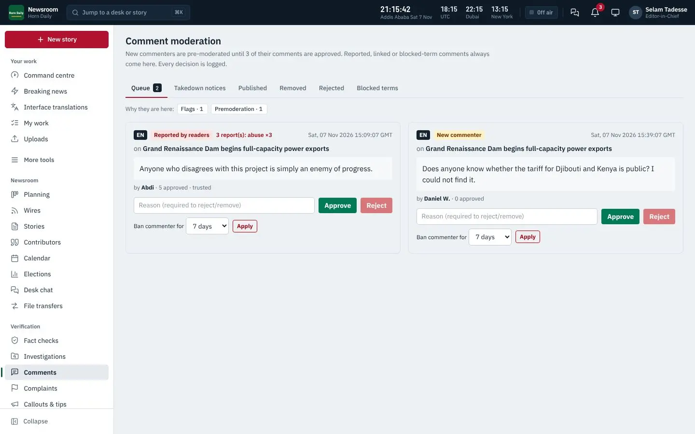
Objectives
After this module you can: * Publish a callout and handle answers * Moderate comments * Handle tips safely
Demonstration
-
Moderate a queue with reported comments.
-
Publish a callout.
Hands-on exercise
- Publish a training callout with two questions and a consent text.
- Answer it from the website as a reader.
- Moderate five comments: approve, hide, reject.
- Block a test reader with a reason.
Check your understanding
- Which comments are handled first?
- What must a callout explain?
- Where do callout attachments go for checking?
- Is a blocked reader recorded?
- Pre- or post-moderation for sensitive stories?
Answers are in the Assessment part, module 13.
4.14Module 14: Standards: complaints and fact-checks
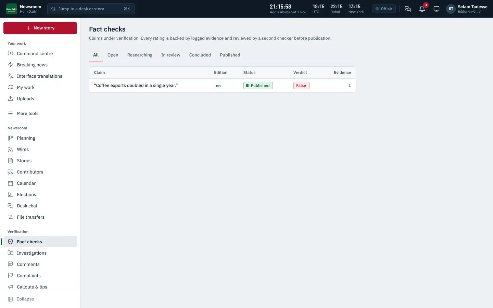
Objectives
After this module you can: * Handle a complaint to closure * Publish a fact-check with a rating
Demonstration
- Walk through a complaint and its correction.
Hands-on exercise
- Submit a complaint from the website.
- Assign it, record findings and reply.
- Publish a fact-check with evidence and a rating.
Check your understanding
- What does a complaint get when it arrives?
- Why mark up fact-checks?
- Can a complaint be closed without a reply?
- Where is the JTI self-assessment?
- Who should see legal notes?
Answers are in the Assessment part, module 14.
4.15Module 15: Investigations and source protection
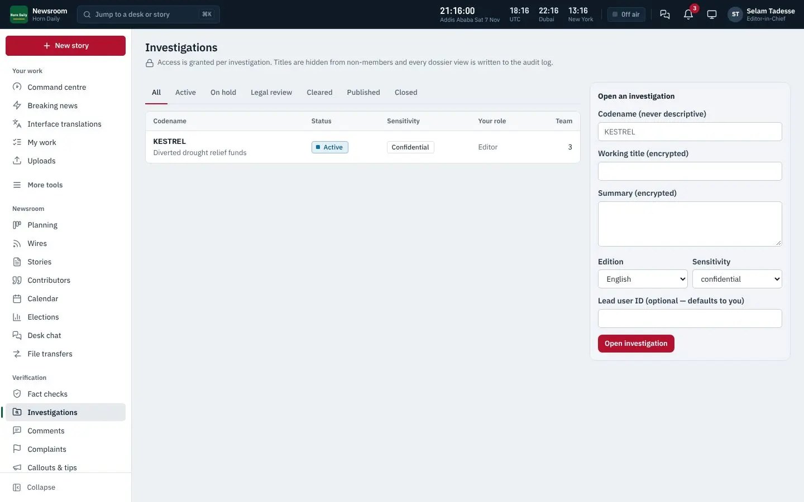
Objectives
After this module you can: * Open a closed investigation * Protect sources and material * Publish through the investigation chain
Demonstration
- Create an investigation and add members.
Hands-on exercise
- Create an investigation with a neutral code name.
- Add one member.
- Upload a document with source notes.
- Link an entity and add a timeline entry.
Check your understanding
- Can administrators read every investigation?
- Is investigation material sent to outside AI services?
- Where do source names belong?
- Why a neutral code name?
- How are investigation stories published?
Answers are in the Assessment part, module 15.
4.16Module 16: Elections
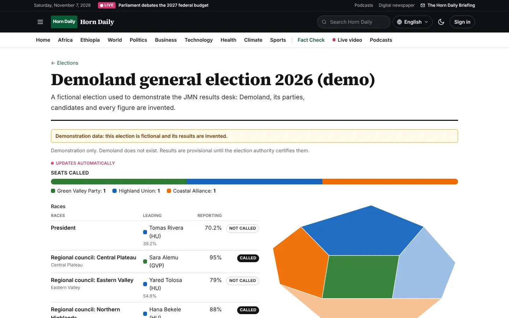
Objectives
After this module you can: * Set up an election * Enter and verify results * Publish results to the website, widgets and broadcast
Demonstration
- Enter and verify a result.
Hands-on exercise
- Create a training election with two contests.
- Add candidates and parties with colours.
- Enter a result; let a partner verify it.
- See it on the public results page.
- Delete the training results.
Check your understanding
- When is an entered result public?
- What updates from the same data?
- Why practice results?
- What is shown with results?
- Which edition includes elections?
Answers are in the Assessment part, module 16.
4.17Module 17: Broadcast: rundowns and studios

Objectives
After this module you can: * Build a rundown with timings * Use the prompter and presenter view * Fire graphics * Bring in a remote guest
Demonstration
- Run a five-minute bulletin from a rundown.
Hands-on exercise
- Build a rundown of six items that fits five minutes.
- Open the prompter on a tablet.
- Fire a lower third for each speaker.
- Invite a remote guest (a colleague) and bring them on air.
- Mark items done in On air mode.
Check your understanding
- What does back time show?
- Does a remote guest install anything?
- Where are graphics shown?
- Default remote guest gateway?
- When should you test a guest?
Answers are in the Assessment part, module 17.
4.18Module 18: Revenue and advertising
Objectives
After this module you can: * Create membership plans * Understand payment confirmation * Run an ad campaign
Demonstration
- Create a plan and show a test payment.
Hands-on exercise
- Create a monthly and a yearly plan in two currencies.
- Set a paywall with five free stories a month.
- Create an advertiser and a campaign with one creative.
- Read the revenue and campaign reports.
Check your understanding
- When is a membership active?
- Whose merchant account receives payments?
- What ends a campaign?
- How are bank transfers activated?
- How is sponsored content shown?
Answers are in the Assessment part, module 18.
4.19Module 19: Analytics
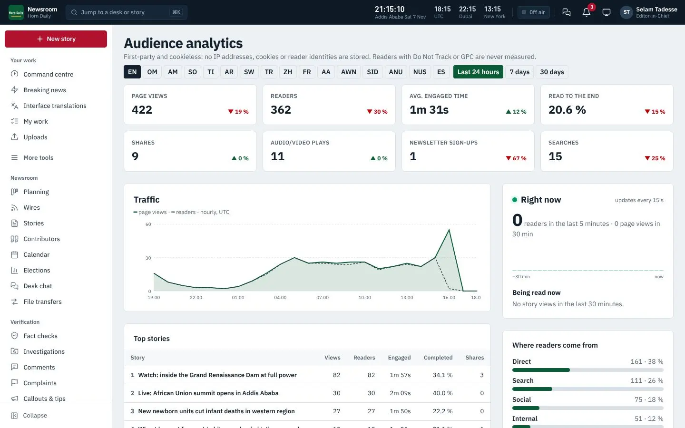
Objectives
After this module you can: * Read story and edition analytics * Choose the right measure
Demonstration
- Compare two stories by reading time.
Hands-on exercise
- Open the analytics of your most-read story this week.
- Compare reading time and completion with another story.
- Find the top source of readers.
Check your understanding
- Best sign of value?
- Are third-party trackers used?
- When should you look at a story's analytics?
- What are returning readers?
- Which edition includes analytics?
Answers are in the Assessment part, module 19.
4.20Module 20: The Reporter app
Objectives
After this module you can: * Sign in to the Reporter app * File a story offline * Upload media from the field
Demonstration
- File from a phone in airplane mode.
Hands-on exercise
- Install the Reporter app and sign in.
- Accept an assignment.
- Switch on airplane mode and write a draft with a photo.
- Switch it off and watch the draft send.
- Resolve a conflict by choosing save copy.
Check your understanding
- Can you write without a connection?
- What happens to a large upload after an app restart?
- What are the conflict choices?
- Which languages can the app itself use?
- Does story text follow the app language?
Answers are in the Assessment part, module 20.
4.21Module 21: Administration: people and roles
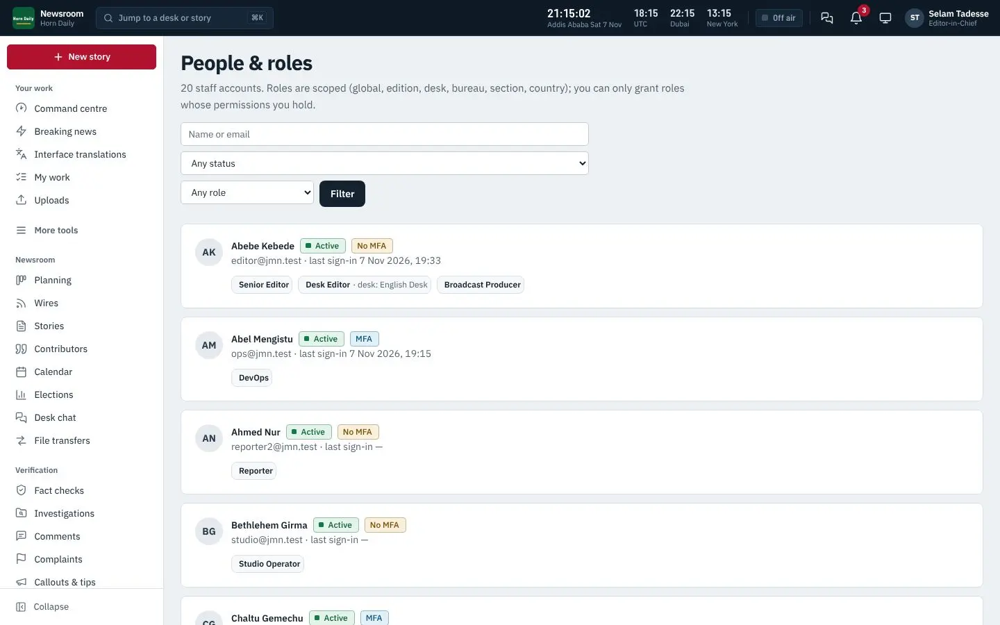
Objectives
After this module you can: * Invite people and grant roles with scopes * Offboard people * Review access
Demonstration
- Invite a person, grant a scoped role with an expiry.
Hands-on exercise
- Invite a training user.
- Grant Reporter on one desk and Translator for one language, expiring in a week.
- Check what the user can see.
- Offboard the user and transfer their work.
Check your understanding
- What is a scope?
- Why offboard instead of suspend?
- Which roles should require two-step sign-in?
- Where is the list of permissions?
- How often to review access?
Answers are in the Assessment part, module 21.
4.22Module 22: Administration: brand, editions, licence and integrations
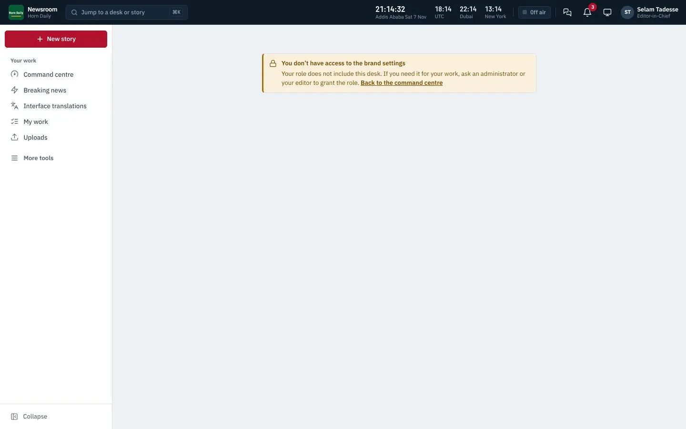
Objectives
After this module you can: * Change the brand * Open an edition * Install a licence * Connect an outside service
Demonstration
- Change the accent colour and see the website follow.
Hands-on exercise
- Change the tagline and accent colour; check the website.
- Open the Licence page and read the state, limits and check-ins.
- Add a test webhook endpoint and send a test delivery.
- Open Capabilities and see which services each feature needs.
Check your understanding
- What happens when you change the brand?
- Where is a licence key installed?
- How are keys of outside services stored?
- How are webhooks signed?
- Are services that send data abroad on by default?
Answers are in the Assessment part, module 22.
4.23Module 23: Administration: security, audit and backups
Objectives
After this module you can: * Use the audit log * Make and restore backups with four eyes * Run the daily and weekly checks
Demonstration
- Request and approve a restore with two administrators.
Hands-on exercise
- Filter the audit log for role grants this week.
- Make a backup now.
- Request a restore to the training environment; a second administrator approves.
- Walk through the daily checklist.
Check your understanding
- Why is the audit log tamper-evident?
- How many people does a restore need?
- How often to test a restore?
- What do you do first after a suspected break-in?
- Where are failed jobs seen?
Answers are in the Assessment part, module 23.
4.24Module 24: Operations: install, update and recover

Objectives
After this module you can: * Install on Ubuntu 24.04 with one command * Update safely * Restore from backups on a new server * Use the runbooks
Demonstration
-
Install on a fresh server.
-
Restore on a second server.
Hands-on exercise
- Install Sham MediaOS on a fresh test server.
- Install a trial licence and sign in.
- Make a backup and copy it off the server.
- Destroy the server, build a new one and restore.
- Time the restore and write the short review.
Check your understanding
- Which database is required?
- Recommended launch server?
- What runs scheduled publishing?
- What do you do if an update fails?
- Where are all settings explained?
Answers are in the Assessment part, module 24.
Assessment
Answers, certification and forms
5.1Quiz answers
Module 1: Welcome to Sham MediaOS
-
What is an edition? The whole publication in one language, with its own front page, sections and editors.
-
What happens to the public website if the licence lapses? It keeps running; only the newsroom becomes read-only.
-
Which page shows what is waiting for you? My work (and the Command centre).
-
Which keys open the command palette? Ctrl+K, or Cmd+K on a Mac.
- Where are the screenshots in these manuals taken from? An example outlet called Horn Daily; your system shows your own brand.
Module 2: Signing in safely
-
Why are SMS codes not used for staff sign-in? SMS can be intercepted or redirected; authenticator apps and passkeys are safer.
-
You lost your phone. What do you use? A recovery code, then set up two-step sign-in again; tell your administrator.
-
Can you reuse a recovery code? No, each code works once.
-
An e-mail asks you to sign in through a link to fix your account. What do you do? Do not use the link; open the newsroom address yourself and report the e-mail to your administrator.
- Why are you asked to sign in again before adding a passkey? Adding a passkey needs a fresh sign-in within the last 15 minutes, to protect your account.
Module 3: Planning and assignments
-
Where does an assigned story appear for the reporter? In My work.
-
What should a pitch contain? A working title, the angle, the desk, the edition, sources and expected media.
-
Who can assign stories? Desk chiefs and editors with the planning permission.
-
Why link events to pitches? So the coverage plan and the event stay together and nothing is missed.
- Can one pitch target several editions? Yes.
Module 4: Writing in Story Studio
-
What is alternative text for? It describes the image for people who cannot see it and for search engines.
-
How do you insert a block? Type / or use the + button.
-
Do you need to press Save? No, the story saves itself; Ctrl+S saves at once.
-
What does the readiness check do? Lists what is missing or wrong before submission: red items must be fixed.
- Can you get back an earlier version? Yes, from Versions.
Module 5: Media: photos, audio, video and documents
-
What happens if the connection drops during a large upload? The upload continues from where it stopped.
-
Why record rights and expiry? So expired or limited material is flagged before reuse.
-
Does changing a caption in a story change it in the library? No, only for that story.
-
What is the focal point for? Crops keep the important part, such as a face.
- Where does material sent by contributors arrive? In Uploads, for checking.
Module 6: Editing, approval and publishing
-
Can a reporter change a story while an editor has it? No, it is locked until it is returned or published.
-
When is the Publish button disabled? When an approval chain applies and approvals are missing.
-
Can you approve your own story under a chain? Not when the chain forbids it, which is normal.
-
In which time zone is a scheduled time? The edition's time zone.
- Where are approvals recorded? In the story history and the audit log.
Module 7: Updates, corrections and takedowns
-
Where do corrections appear? On the story and on the public corrections page.
-
Should a correction repeat a defamatory claim? No.
-
Does unpublishing delete the story? No, it stays in the newsroom with its history.
-
Who is told about a correction? Readers, and webhooks and partners where set up.
- What is the difference between an update and a correction? An update adds news; a correction fixes an error.
Module 8: Languages, translation and the termbase
-
Is a machine draft publishable as it is? No, it is a draft until a person changes and approves it.
-
What is the termbase? Approved spellings of names, places and terms in each language.
-
Should a headline be translated literally? Not necessarily; adapt it for the edition's readers.
-
Who approves translations? Edition editors (reviewers).
- What happens when a reader opens a page missing in their edition? They see the English page if it exists, or a clear message.
Module 9: Breaking news and live coverage
-
Which channels can a breaking alert use? Website banner, app and web push, SMS where set up.
-
Why might an alert wait before sending? Your outlet requires a second editor to confirm.
-
Do readers need to reload a live page? No, posts appear by themselves.
-
What are key events? Important posts listed in the summary.
- When should an alert end? When the news is no longer developing.
Module 10: Front pages, structure and SEO
-
Where are front pages arranged? Front page layouts.
-
What is a topic? A collection of stories on one subject that readers can follow.
-
Why set a separate search title? Search engines show about 60 characters; the headline may be longer or less clear.
-
What links editions for search engines? hreflang links, set automatically.
- Where are sections created? Site structure.
Module 11: Newsletters and notifications
-
Why double opt-in? Only people who confirmed receive e-mail; it protects deliverability and consent.
-
What happens to hard bounces? They are suppressed automatically.
-
A good complaint rate is below…? 0.1 %.
-
Who should receive a push? Readers who chose the edition or topic; only for news worth interrupting them.
- Where are e-mail texts edited? E-mail templates.
Module 12: Social, video and podcasts
-
Why link social posts to your own site? Readers can sign up and support you there.
-
What podcast artwork size is required? At least 1400 × 1400 pixels.
-
Where do podcast platforms read episodes from? The show's feed.
-
Should AI transcripts be checked? Yes, especially names and numbers.
- Where are clip uploads recorded? In the Video workspace with their results.
Module 13: Audience interaction and moderation
-
Which comments are handled first? Reported comments.
-
What must a callout explain? What you are looking for, why, how answers will be used, and consent.
-
Where do callout attachments go for checking? Uploads.
-
Is a blocked reader recorded? Yes, with the reason.
- Pre- or post-moderation for sensitive stories? Pre-moderation, or close comments.
Module 14: Standards: complaints and fact-checks
-
What does a complaint get when it arrives? A reference and a deadline.
-
Why mark up fact-checks? So search engines can show the rating.
-
Can a complaint be closed without a reply? It should be answered and closed with the outcome.
-
Where is the JTI self-assessment? Administration → Compliance → JTI.
- Who should see legal notes? Only legal counsel and editors involved; they are kept apart from the text.
Module 15: Investigations and source protection
-
Can administrators read every investigation? No, only members.
-
Is investigation material sent to outside AI services? Never.
-
Where do source names belong? In the restricted source notes, never in drafts or chats.
-
Why a neutral code name? So the name reveals nothing.
- How are investigation stories published? Through the investigation approval chain.
Module 16: Elections
-
When is an entered result public? After a second person verifies it.
-
What updates from the same data? Website, widgets, feeds and broadcast graphics.
-
Why practice results? To test the night; they must be deleted before polling day.
-
What is shown with results? Share counted and time of last update.
- Which edition includes elections? Professional and above.
Module 17: Broadcast: rundowns and studios
-
What does back time show? When each item must start for the programme to end on time.
-
Does a remote guest install anything? No, they use a browser link.
-
Where are graphics shown? On the overlay page used by the mixer or streaming software.
-
Default remote guest gateway? Self-hosted LiveKit; Jitsi is the alternative.
- When should you test a guest? At least 15 minutes before air.
Module 18: Revenue and advertising
-
When is a membership active? When the provider confirms the payment to the server.
-
Whose merchant account receives payments? The outlet's own.
-
What ends a campaign? Its end date or impression goal.
-
How are bank transfers activated? A staff member records the transfer.
- How is sponsored content shown? With a visible label, optionally approved by the standards editor.
Module 19: Analytics
-
Best sign of value? Reading time and completion.
-
Are third-party trackers used? No.
-
When should you look at a story's analytics? The day after publication.
-
What are returning readers? Readers who came back within the period.
- Which edition includes analytics? Professional and above.
Module 20: The Reporter app
-
Can you write without a connection? Yes, drafts are sent when you are online again.
-
What happens to a large upload after an app restart? It continues.
-
What are the conflict choices? Keep mine, take theirs, save copy.
-
Which languages can the app itself use? English, Amharic, Afaan Oromoo, Tigrinya, Somali, Arabic.
- Does story text follow the app language? No, it uses the edition's script and direction.
Module 21: Administration: people and roles
-
What is a scope? The part of the organisation a role applies to: bureau, desk, language, section or country.
-
Why offboard instead of suspend? Offboarding signs out everywhere, removes roles, revokes tokens and transfers work.
-
Which roles should require two-step sign-in? Every role that can publish, administer or see personal data.
-
Where is the list of permissions? Roles, and the Roles and permissions reference.
- How often to review access? Monthly.
Module 22: Administration: brand, editions, licence and integrations
-
What happens when you change the brand? Website, e-mails and apps follow within minutes.
-
Where is a licence key installed? Administration → Licence.
-
How are keys of outside services stored? Encrypted, shown once.
-
How are webhooks signed? HMAC-SHA256.
- Are services that send data abroad on by default? No.
Module 23: Administration: security, audit and backups
-
Why is the audit log tamper-evident? Each entry carries a hash linking it to the previous one.
-
How many people does a restore need? Two administrators.
-
How often to test a restore? Monthly.
-
What do you do first after a suspected break-in? Keep evidence; do not delete anything.
- Where are failed jobs seen? Operations Center.
Module 24: Operations: install, update and recover
-
Which database is required? PostgreSQL 16 or newer (17 in the Docker kit); MySQL is not supported.
-
Recommended launch server? 8 vCPU, 16 GB memory, 160 GB NVMe, plus off-site backups.
-
What runs scheduled publishing? The scheduler, every minute.
-
What do you do if an update fails? Stop, read the first error, roll back the release and restore the pre-update backup.
- Where are all settings explained? Configuration reference in the Installation and Operations Manual.
5.2Practical certification tasks
A trainee completes the task for their path in the training environment, observed by the trainer.
| Path | Task | Pass when |
|---|---|---|
| Reporter | Pitch, write and submit a story with two photos, from pitch to submission in 45 minutes | Readiness has no red items; captions and alternative text are complete |
| Editor | Edit, query, approve and schedule a reporter's story; publish a correction on another | Correction appears publicly; schedule correct in edition time |
| Translator | Translate a 400-word story and its headline using the termbase | Reviewer approves with no term errors |
| Audience editor | Build, test and schedule a newsletter issue; send a push | Test received; schedule correct |
| Producer | Build and run a five-minute bulletin with one remote guest | Finishes within 15 seconds of the slot |
| Administrator | Invite and offboard a user; request and approve a restore with a colleague | Audit log shows both actions |
| IT | Restore the system on a new server from backups | System works; time recorded |
5.3Certificate
Certificate of training
This certifies that ______________________________ completed the Sham MediaOS ______________________ learning path, passed the module quizzes and the practical task on ____ / ____ / ________.
Trainer: ______________________ Signature: ______________________
Organisation: ______________________
5.4Attendance sheet
| # | Name | Role | Module(s) | Quiz score | Signature |
|---|---|---|---|---|---|
| 1 | |||||
| 2 | |||||
| 3 | |||||
| 4 | |||||
| 5 | |||||
| 6 | |||||
| 7 | |||||
| 8 | |||||
| 9 | |||||
| 10 | |||||
| 11 | |||||
| 12 | |||||
| 13 | |||||
| 14 | |||||
| 15 |
5.5Training evaluation form
Rate from 1 (poor) to 5 (excellent).
| Question | 1 | 2 | 3 | 4 | 5 |
|---|---|---|---|---|---|
| The objectives were clear | |||||
| The demonstrations were easy to follow | |||||
| The exercises matched my daily work | |||||
| I can now do my job in Sham MediaOS | |||||
| The trainer answered my questions | |||||
| The pace was right |
What should we change? ____________________________________________________________
Index
Every chapter, section and topic in this volume, with its page.
The Sham MediaOS library
Sham MediaOS is a newsroom, website, apps and broadcast platform that a news organisation installs on its own server, in its own languages, under its own brand. These volumes cover it from the reader's first visit to the engineer's last database migration.
Sham Software Systems Development General Trading PLC · Addis Ababa, Ethiopia · sham.et
Sham MediaOS is a product of Sham Software Systems Development General Trading PLC. Screens show the example outlet “Horn Daily”; your newsroom shows your own name, colour and languages.